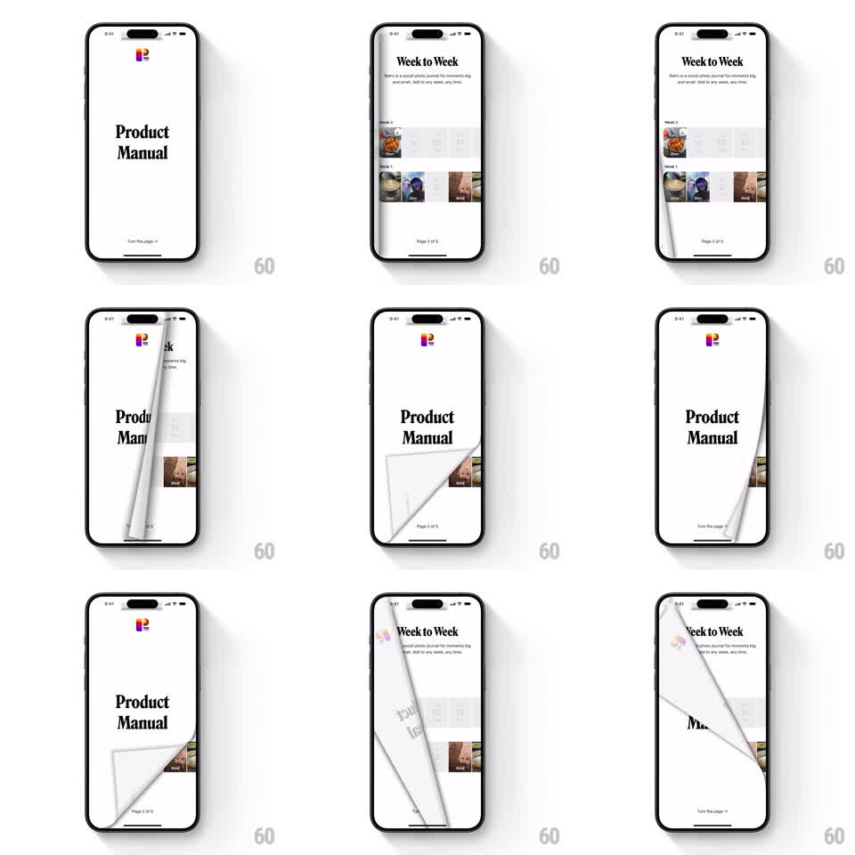

Media
Frame-by-frame

Rebuild this interaction 1:1: Retro's product manual - a skeuomorphic 3D page flip where the page corner peels and curls with the finger, casting a live shadow, revealing the next page underneath.

Rebuild this interaction 1:1: Retro's product manual - a skeuomorphic 3D page flip where the page corner peels and curls with the finger, casting a live shadow, revealing the next page underneath. ## Integration Integration: stack-agnostic spec - springs given as stiffness/damping, timed motions as duration + curve; map every value to your framework and animation library of choice. ## Scene A white "Product Manual" page (serif title, Retro logo, "Turn the page" hint, "Page 2 of 5" footer). Beneath it: the "Week to Week" journal page (photo rows by week). The flip: the current page lifts from the corner, curls like paper, and lays back to the left, exposing the page below. ## Motion spec Pattern: finger-tracked paper curl page flip. - Drag from the page corner: the curl starts at the touch point, the page deforming along a curl axis that follows the finger 1:1 - the lifted portion bends with a realistic paper curve, its back side showing a dimmed mirror of the front content. - A soft shadow pools under the curl, widening as more page lifts; the revealed page underneath brightens from a slight dim. - Release past the halfway point: the flip completes with a soft ease-out (~350ms), the page settling flat with a whisper of overshoot; release before halfway and it curls back (~300ms). - The page stack edge is visible at the right margin - a few pixel lines of remaining pages. - Reverse drag from the left flips back with the same physics. ## Calibration - The curl must track the touch point, not a fixed corner anchor - grabbing mid-edge curls from mid-edge. - Paper stiffness sits between foil and cardstock: a clear bend radius, no rubbery stretch. ## Reduced motion Pages slide horizontally with a fade. ## Don't miss - The back of the page is not blank - it shows a faint mirrored ghost of the front. - The settled page lies flat with no residual lift; a permanent curl reads as a rendering bug.